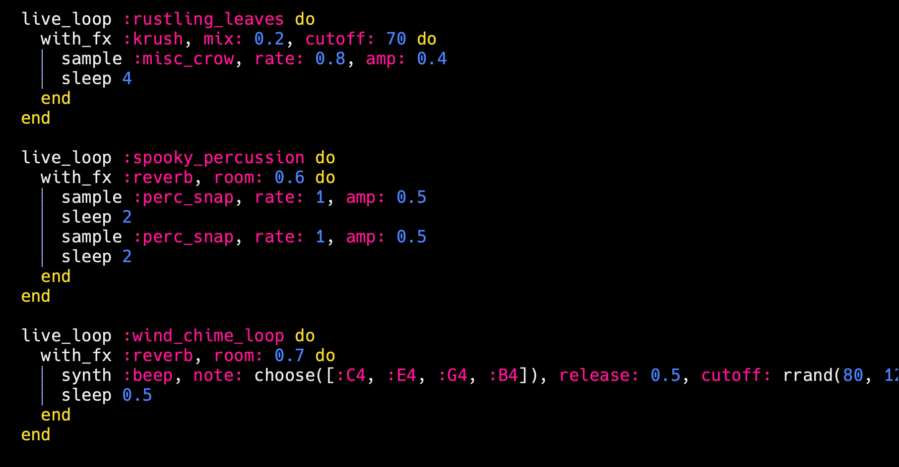
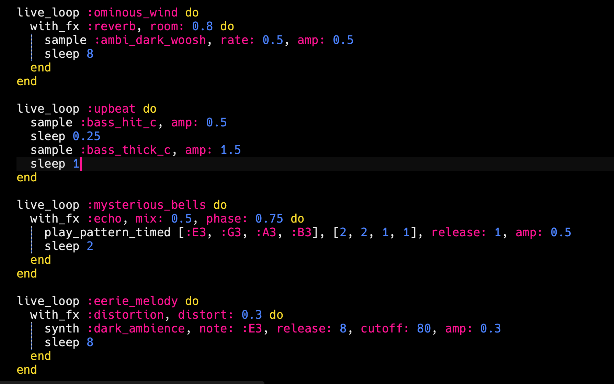
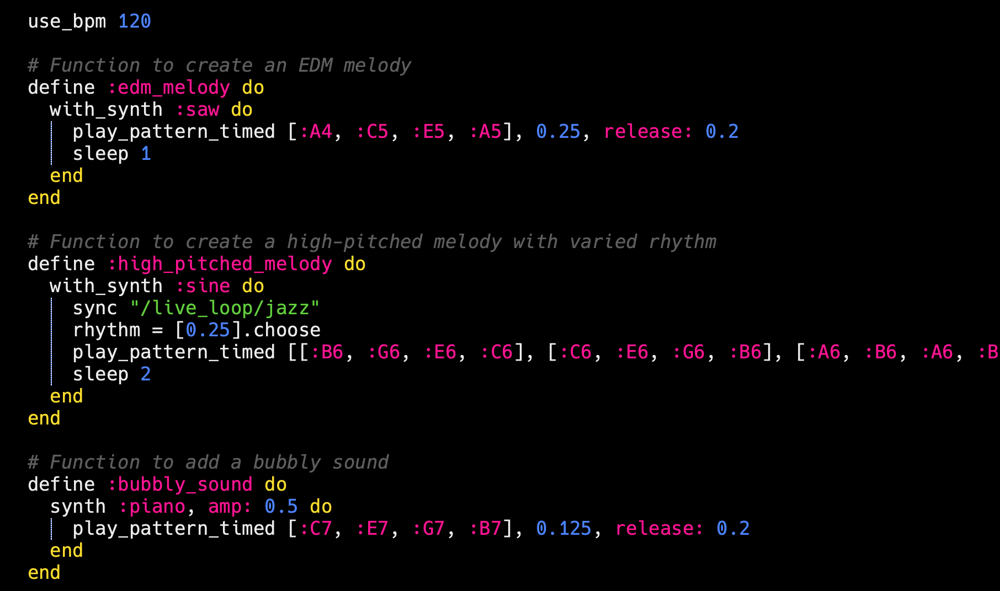
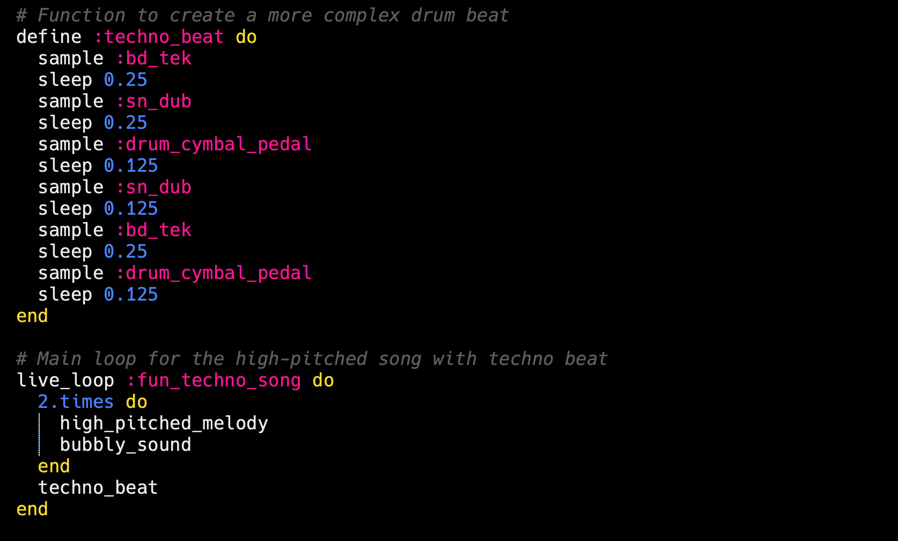
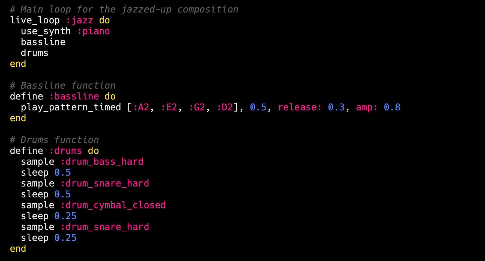

Click the link above to play the game!
Developed by: Elvina Wibisono, Luci Feinberg, Elifia Muthia
This game follows a young girl, Ari, as she journeys into the Melodious Grove, a mysterious forest, to complete a series of musical tasks in order to obtain ingredients to make a magic potion to save her grandma. Melodious Grove is developed using WebAudio and the 3 different musical tasks, presented as mini games, are meant to showcase the different concepts and techniques we learned in COMS 3430: Computational Sound class.
We recommend to play in Safari, for the background Music to work properly. However, different browsers does not effect the quality of the game .
The game opens with an introductory story. The user is introduced to Ari and is told the main goal of the game. We were inspired by old games we grew up to, like Pokemon, and to match that aesthetic, we have a visual of Ari as a pixellated game character and changed the font to match. The story is told with a typewriter effect and the user can press 'ENTER' to get the next line of texts, just like in Pokemon. On the top left of the screen is a speaker button that could be toggled to mute the background music, and when retoggled, it will play the music again.
A WebAudio technique that we integrated here was how to work with audio files.
For this game, we used another javascript API called Phaser. This API helps with game development. Within Phaser library they use WebAudio library to handle the audio of the game. So here we are using the Phaser function for handling audio, since Web Audio is already integrated in the library. In this game, we used the volume of the music as a way of navigating through the maze. The closer you are to the destination, the louder the music gets.
The first challenge in making this minigame, is how to work with Phaser, with no knowlede in game development this is a very big challenge. We are able to developed a Phaser game basing it from the this game tutorial from the Phaser's official website. This really help us starting on the foundations of this minigame development. The other challenge, is how to make the maze a bit challenging, so we decided to put a dark opaque layer to make the player a bit more challenging to find the destination.
For this game, we wanted to explore new WebAudio techniques that we never got to implement in class such as working with a different audio input, particularly microphone. We knew we wanted to work with frequency and pitch in this minigame and thought that making the user sing into the microphone will make the game a lot more interactive than an alternative we considered which was to use the space bar to control the pitch.
In this game, a randomly generated pitch range of 100Hz will be selected from the range 150-500Hz that the user will then have to find and sing. The game is divided into 3 levels where the user is asked to sing 3 times with different target pitch ranges. The user will then have to hold that pitch for a few moments before going to the next level. Hint: try humming up and down a note scale, I find that the microphone picks up frequency much better that way.
The first challenge that I faced was how to pick up the frequencies from the microphone as it didn't turn out to be as straightforward as I expected. After doing some research, I found a helpful Stack Overflow post outlining the many subproblems that come with pitch detection. The biggest one for me was finding a numeric representation of the single fundamental frequency where it was suggested I used the autocorrolation method. I followed the implementation of the autocorrolation signal and understood that after preprocessing the signal, we could then find the average distance between maxima in the signal to identify the period and along with the sample rate, calculate the frequency of the identified signal. This implementation was not perfect but I found to be a good enough solution for our purposes in identifying pitch.
Working with microphone input turns out to be much more challenging than I expected as there is a lot of background noise that gets picked up by the microphone that is making the bar in the game too sensitive. I specifically noticed that the microphone keeps picking up really high frequencies (around 2000Hz) that is getting picked up by the pitch bar in the game instead of the user's pitch that is being sung. I also noticed that there are low frequencies disrupting the signal although it doesn't bother the pitch bar as much as the high frequencies do but nevertheless, should be filtered out as well. I knew that I'll have to filter out these background noise and so I implemented both high pass and low pass filters to filter out frequencies that are above 600Hz and ones that are below 50 Hz. After implementing these filters, the pitch bar seems to pick up the user's voice better and when comparing it with another pitch detection app, the frequencies that are being picked up by the game is more similar to the app. The game is in no way perfect in filtering out background noise but it is definitely not as sensitive to non-human-voice sounds than it was previously.
For this game, we wanted to use the ADSR enveloping feature, which is something we wanted to improve from our past homeworks that had clicking. Intiially, we were ambitious as we wanted to change the oscillators and the waveform, and have other instruments other than a piano. This would have been similar implementation as the benchmark we already have for the piano sequence; however, it would have been significantly more front-end, which seemed out of the scope of this particular assignment.
Since we ultimately wanted to bridge the knowledge we learned in computational sound with human-computer interaction knowledge, we decided to make a game where the user must perform a memorization task. This bridges what we learned about generating smooth sounds with WebAudio, as well as controlling gain values, oscillartors, and managing multiple notes at once. There was also a generative aspect of this assignment, which took inspiration from live coding. This was that the pattern that is generated from the computer is random. Given that the user generated notes and the computer generated notes are happening simultaneously, we not only have to manage multiple oscillators and gain nodes, but also two completely different audio contexts. This showed challenging at times.
Challenges we faced on minigame had a lot to do with timing. Since we are generaring a sequence of notes, we had to figure out how to time the visuals with the sound correctly, and then since there were a total of 24 different notes, we needed to keep track of all of them simultaneously. We had to debug to make sure every node was connected correctly. Another challenge we had for this game was the front-end. A note on hard-coding: the position of each of the dots are computed, not hard coded; however, in the html file, we needed to create distinct dots for every single note. This is because we initally planned for the user to be able to play multiple notes at one time. This did not get added to our final game, as we decided that our game exhibits computational sound concepts enough, and we did not need to add extraneous levels.
The inspiration for this came from wanting to replciate the sound of a forest. Because it is a mysterious, melodious grove, we wanted the bass and melody to contribute to an eerie feeling, while incorporating a feeling of being in nature. With this, we implemented different sounds while live coding, such as cawing of birds, wind-chimes, and trying to replicate the sound of wind and leaves rustling. This gives the intro sequence a very sppoky feeling, which is the theme of the game. Despite this, we wanted to keep it relatively upbeat to match the tone of general video games.
 For this game, we wanted to keep the theme of a forest going. But this one is more spooky, as the player is in the dark. Because of this, we wanted to mimic the sound of birds "chirping" to instill that the user is still in the woods; however, we wanted to keep the theme of video-game music. The high-pitch melody is supposed to mimic birds chirping to try and help the user get through the sound maze. To keep the general sound of a video game, we wanted to keep a techno beat.
  If video above is not working please refer to this Youtube link